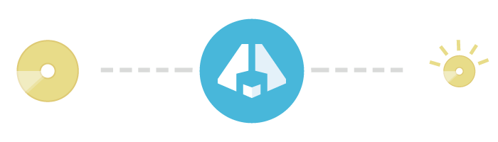

Creating an immersive experience for gamers increasingly requires large quantities of data. For most gamers this makes downloads, slow, painful and sometimes too expensive to contemplate.
Whilst compression has always been used to deliver video games, this hasn't stopped game sizes growing by around a third each year. Unfortunately network speeds increase much more slowly and so the time it takes to download a major title is getting gradually longer.
In the same way that new standards such as H264 and MP4 have revolutionised the distribution of video over the internet, Tangentix' algorithms and techniques dramatically improve the size and quality of the game download experience. Depending on the mixture of assets involved the compression tends to result in the whole game being 2-4x smaller.
The compression process only needs an unprotected Gold Disk Master to generate the compressed game. The Tangentix tools then compress all the main asset types, meshes, textures, sounds and video to optimise them for delivery. It takes a few hours for most games to be re-encoded in this way on our servers and then we can provide a compressed gold-disk master back to the publisher for distribution in the normal way.
To further improve the user experience, we provide a downloader that decompresses the assets back to their normal file formats during the download, dramatically reducing or removing the install time too.
Once installed the game is file-for-file identical to the original copy and can be managed with the same patching and update mechanisms absolutely as normal.
| Game | Normally compressed | Tangentix Compressed |
|---|---|---|
| Skyrim | 6 GB | 2 GB |
| CoD: Black Ops II | 14.5 GB | 4.8 GB |
| World of Tanks | 4.5 GB | 2.2 GB |
| Dirt Showdown | 6.4 GB | 2 GB |
| Perfect World | 5.2 GB | 2.2 GB |
| Kane & Lynch II | 7 GB | 2.8 GB |
Most of the world's gamers are on DSL connections, which mean average download speeds below 5 Mbps. With increasing game sizes that means they have to commit to downloads that clog their internet connection for many hours and sometimes days.
It's hardly surprising then that so many still prefer physical disks for their games despite the greater convenience of downloads.
In many territories download caps are a problem too. In the UK 20 GB/month is a common limit for a mid-range package- which can mean painful speed penalties or overage charges. In other territories these limits are lower, often 5 GB/month, so making nearly all modern AAA titles un-downloadable.
Publishers tell us that their margins improve by at least $5-10 on a typical AAA release every time a gamer chooses the digital download option. This is even greater when factoring in the impact of the second hand market.
So a quick and painless compression of your titles makes all the difference to the user experience and over time can make a big impact on the profitability of each title.
Typically a compressed game will be around 1/3rd of the size of the original game. The bigger the original game the greater the compression tends to be. You can see some examples here.
If the title was built on a common game engine it takes just a few hours. If it's a game engine we've not done before then it takes us a few days to make the necessary filters.
All the game code is completely unchanged by the process. We do compress the assets- meshes, textures, sounds and video using our own techniques. However, while the game is downloading we restore the original file formats to leave the installed game file-for-file identical to the original.
The result is that no extra QA is required.
Nothing. We take the completed gold-disk master and compress it, but we don't need to change a single byte of the program code. We need no source code access.
Yes. Today nearly all game distribution already uses a technique like ZIP to compress the content. Tangentix also uses such a technique to compress all the assets that don't have their own special Tangentix format.
The 3x compression we quote for our technology is comparing against the current "zipped" distribution as used on the internet today.
Yes. Once installed the game is file-for-file identical to the original so patching works fine on every system we've tested to date.